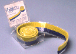

The following section provides helpful hints and sources for each of the different clays. The comments are from the customizers surveyed for this article.
|
Milliput Specifications: 2-part polymer clay Hardens in 1 hr, cures overnight Comes in several grades (Superfine White preferred) Availability: Milliput, Micro-Mark, Hobby Shops |
What the customizers say:
"Hard to find for some, but worth ordering. Dries very strong but can still be cut and sanded for sharp edges." "The best I have worked with, but could have a slightly longer working time." "Use water, and blend really well. A great product but the mixing and mess is a pain." "It could be that I got the cheap grade, or a bad batch, but I really didn't like this stuff, couldn't work with it at all, only slightly better than Das Pronto." "This is still my favorite stuff, the only thing I wish it had was longer time to sculpt, but for me that is not really an issue, its sandability (super fine white grade) more than makes up for it. I do a lot of 'dry' sculpting that way with it." "Water needed for avoiding stickiness. If sticky during blending stage, wet hands." "Very nice for its smoothability and hardness but stickiness is a slight problem. Water will help with stickiness, but makes a mess." |
|
Magic Sculp Specifications: 2-part polymer clay Hardens in 1 hr, cures overnight Availability: Magic Sculp |
What the customizers say:
"I've only used MS's free sample from a few years back, so make of this what you will, but I found it much harder to mix the parts equally than Milliput, and mismixed MS just doesn't quite dry. It also dried out after a fairly short time." "A little too sticky for my liking, but great in the absence of Milliput." "Must mix thoroughly. Reasonably long working time. Water helps overcome stickiness, but reduces sculptability." "This is my clay of choice, easiest self hardening epoxy to work with." "I used to use this about as much as Milliput until about 2 years ago. They must have changed it or something because the batch I had was just terrible, it wouldn't set and was sticking to everything. I may go and try it again someday but that last experience with it was not a good one." |
|
Kneadatite  Specifications: 2-part polymer clay Hardens in 1 hr, cures overnight Availability: Polmeric, Miniature Molds |
What the customizers say:
"Keep fingers slightly wet when sculpting to avoid stickiness and fingerprints." "It's the bomb." "Great for sculpting; easy to measure out and mix even small amounts; color change helps mix properly; water helps with stickiness; slightly flexible after curing." |
|
Epoxy Putty Specifications: 2-part epoxy clay Hardens in 20 min, cures overnight Availability: Retail/hardware stores |
What the customizers say:
"Cheap clay that's good for filling in big gaps in a figure's surface after dremelling. I'd never use it for detail work but it's great for filling holes." "Inexpensive and readily available at retail stores. Very short working time. Good for filling large areas and creating structural components. Many brands available." "Use only for large, roughed in areas. Not for detail work." "An affordable and effective means to perform heavy-duty structural work. Perfect for filling swiss-cheese holes and substantial cavities in figures. Difficult to refine before curing, but sands like a dream once it's hardened completely. Follow up with a more responsive product for details." "I like to use plumbers putty as filler, and sculpt over with Magic Sculpt." "Stanky!" "Very tough, short work time, strong odor." |
|
Super Sculpey Specifications: 1-part polymer clay Heat cure (220 F, 10 min) Workable until heat-cured Availability: Sculpey.com, Retail/craft stores |
What the customizers say:
"Doesn't like to adhere to figures and needs to be glued to strengthen to bond.Crumbles when sanded after boiling.Good for large add on parts." "Must be baked, which can be problematic for action figure customizing. Boiling or heat gun are baking alternatives. Easier to sculpt with when mixed with 2 oz. packages of Sculpey III black and white. Can be baked multiple times for adding/freezing detail. Generally preferred clay for standalone sculpture." "You have to really bake it by the directions and you may melt your figure at the higher temperature. Good for big original sculpts." "The fragility is enough to turn me off this stuff." "A smooth, workable polymer clay, excellent for retaining fine details, but dries to a brittle finish. Surface tends to crack under pressure, as with etching lines after curing. Bake at 220 degrees for ten minutes. Sands to a glossy sheen, if somewhat translucent." "The best clay to work with, but must be baked and is still fragile after baking." "Goor for original parts that need to be added, but not for detailing as it need to be boiled (uhg) or bakes (melts figure)." "Great sculpability; smooths easily with alcohol; can be brittle after curing." |
|
Fimo Specifications: 1-part polymer clay Heat cure (220 F, 10 min) Workable until heat-cured Availability: FimoZone, Retail/craft stores |
What the customizers say:
"Fimo just starts out too hard. It takes a long time to get it to be workable. Sculpey III starts out workable." "I like to use Fimo instead of Super Sculpey, you give a little in sculptability but when baked its slightly rubbery, so its tougher." "Same as Super Sculpey, no? Pain in the ass to get soft, need solvents and a pasta machine. Tends to have a short shelf life." *Note: New Fimo Soft now available, but was not reviewed. |
|
Sculpey III Specifications: 1-part polymer clay Heat cure (220 F, 10 min) Workable until heat-cured Availability: Sculpey.com, Retail/craft stores |
What the customizers say:
"Better for detail work on a figure than Super Sculpey because you can bake it at 220 for 10 minutes or use a hairdryer and it will still harden." "I've used a hair dryer to cure most of the time, but it's always been smaller pieces." |
|
Premo Specifications: 1-part polymer clay Heat cure (220 F, 10 min) Workable until heat-cured Availability: Sculpey.com, Retail/craft stores |
What the customizers say:
"More elastic than the other polymer clays, Premo doesn't take details as well as Super Sculpey before curing, but you can do literally anything with it after it's hardened. Etched-in lines are a dream, with no danger of surface flaking, although parts break easily. Choice of colors allows for greater cohesion with base figure. Bake at 220 degrees for 10 minutes." |
|
Sculpey (Original) Specifications: 1-part polymer clay Heat cure (220 F, 10 min) Workable until heat-cured Availability: Sculpey.com, Retail/craft stores |
What the customizers say:
(no comments available) |
|
Sculpey Super Flex Specifications: 1-part polymer clay Heat cure (220 F, 10 min) Workable until heat-cured Availability: Sculpey.com, Retail/craft stores |
What the customizers say:
"Flex is pretty much the same as Sculpey III until cured. After that, it's got flex to it, an almost rubber feel. It can be sanded and carved easily." |
|
Das Pronto Specifications: 1-part air-cure clay Cures overnight Availability: Retail/craft stores |
What the customizers say:
"The cheapest and most brittle air-drying clay. Easy to find but breaks easily and sometimes needs to be superglued to a figure. Probably not a bad choice for novice customizers or sculptors. Smells kind of funny." "I hate this junk, I couldn't work with it and it crumbles waay too easily when dried." "Eh, not the best solution. Very brittle after drying." "Cheap clay to use for larger scale projects, where massive amounts of clay are required. Not for detail work." |